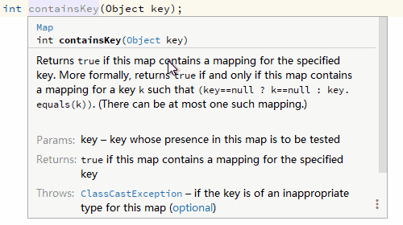
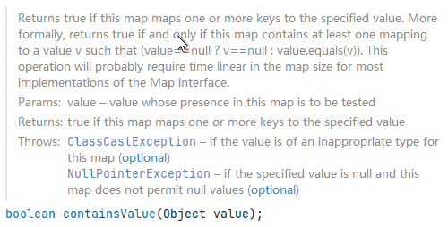
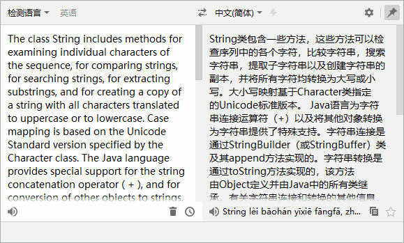
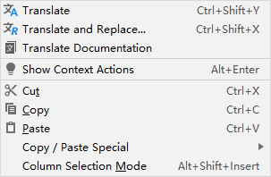
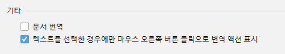

버전 3.1(2020-04-13)
Translation v3.1을 사용해주셔서 감사합니다. 해당 버전에는 다음과 같은 주요 업데이트가 포함되어 있습니다:
- 문서 번역 작업 - 문서 번역 작업이 문서 컨텍스트 메뉴에 추가되었습니다.
- UI 스크롤 동기화 - 원문과 번역된 내용이 동시에 스크롤 됩니다.
- 사용자 환경 조정 - 플러그인의 일부 기본 동작을 조정했습니다.
이곳에서 해당 릴리스 노트를 확인하실 수 있습니다.
번역
문서 번역
빠른 문서 및 에디터 자체 문서의 컨텍스트 메뉴에 문서 번역 작업이 추가되었습니다 (IDE 2020.3+):


요약
UI 스크롤 동기화
원문과 번역된 내용이 동시에 스크롤 됩니다.

사용자 환경 조정
기능의 용이성과 깔끔한 UI의 균형을 맞추기 위해 노력하고 있으며, 일반적으로 기능의 활용도가 낮은 경우, 관련 UI 요소는 컨텍스트에 따라 표시하지 않도록 할 예정입니다.이 노력의 일환으로 다음과 같이 몇 가지 조정을 했습니다.
-
컨텍스트 메뉴
번역 액션은 항상 컨텍스트 메뉴의 맨 위에 표시되기 때문에, 다른 작업을 할 때 주의력이 분산 될 수 있습니다.

따라서 텍스트를 선택했을 때에만 컨텍스트 메뉴에 번역 작업이 나타나도록 조정했습니다.(단축키를 사용하여 액션을 호출하는 경우, 자동 선택 기능이 작동하므로 텍스트를 선택하지 않아도 됩니다.)
물론 이 액션이 익숙하지 않은 경우, 설정 페이지에서 이 액션을 수정할 수 있습니다.

-
번역 엔진 위젯
번역 엔진 위젯은 여러 번역 엔진을 사용할 수 있는 경우에만 표시됩니다.
-
단어장 도구 창
단어장을 사용할 수 없거나 단어장에 단어가 없으면, 단어장 도구 창은 숨김 처리됩니다.
감사합니다.
이 버전에 도움을 주신 다음의 기여자 분들께 감사드립니다：